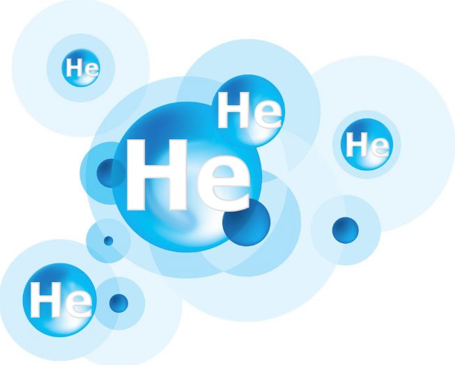
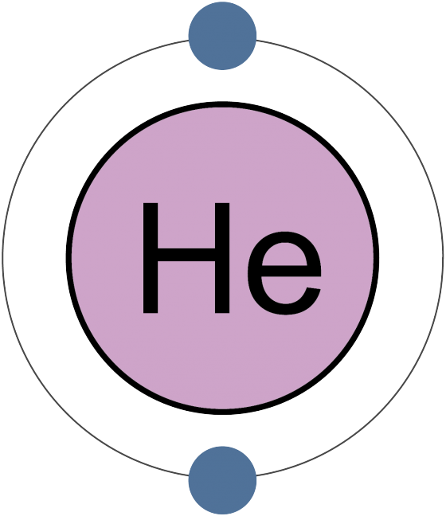
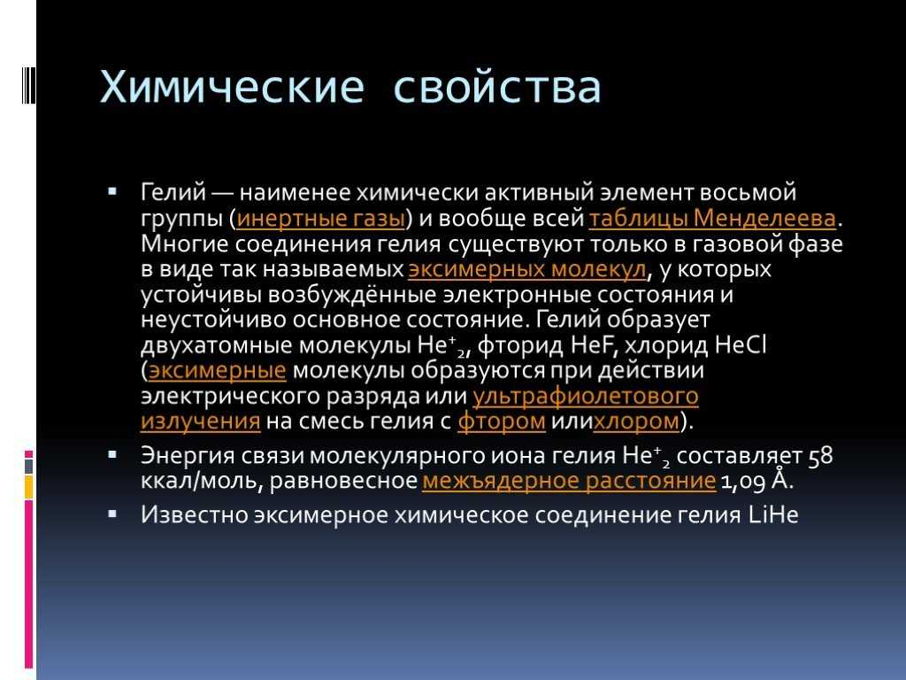

Гелий

Ге́лий (химический символ — He, лат. Helium) — химический элемент 18-й группы (по устаревшей классификации — главной подгруппы восьмой группы, VIIIA) первого периода периодической системы химических элементов Д. И. Менделеева, с атомным номером 2.

18 августа 1868 года французский учёный Пьер Жансен, находясь во время полного солнечного затмения в индийском городе Гунтур, впервые исследовал хромосферу Солнца. Жансену удалось настроить спектроскоп таким образом, чтобы спектр короны Солнца можно было наблюдать не только при затмении, но и в обычные дни. На следующий же день спектроскопия солнечных протуберанцев наряду с линиями водорода — синей, зелёно-голубой и красной — выявила очень яркую жёлтую линию, первоначально принятую Жансеном и другими наблюдавшими её астрономами за линию D натрия. Жансен немедленно написал об этом во Французскую академию наук. Впоследствии было установлено, что ярко-жёлтая линия в солнечном спектре не совпадает с линией натрия и не принадлежит ни одному из ранее известных химических элементов.

Этот газ легко проходит сквозь воздух, воду, пластики, стекло. А сквозь тяжелые металлы — железо, платиноиды — и многие минералы он пройти не может. При этом гелий еще и плохо растворяется в металле, то есть, попав в него, склонен собираться в разного рода полостях. Такая особенность вызывает сильную головную боль у инженеров-ядерщиков, ведь гелий легко оказывается в металле, из которого сделаны их объекты, — он влетает туда в виде альфа-частицы, рожденной при распаде ядра либо в термоядерной реакции. Иначе говоря, в металлических конструкциях реактора АЭС, прямо в топливных сборках и в конструкциях строящегося термоядерного реактора неизбежно станет накапливаться гелий. В металле альфа-частица обретает электрон и становится атомом газа, который перемещается по решетке и скапливается возле дефектов кристаллического строения. Со временем там формируются газовые пузыри и металл распухает — это явление так и называют «гелиевое распухание». Если пузыри формируются вблизи поверхности, то она крошится. Материаловеды, занятые созданием сплавов для ядерной энергетики, тратят много времени на решение проблемы гелиевого распухания — в этом легко убедиться, просмотрев свежие публикации научных журналов с ключевым словом «гелий».